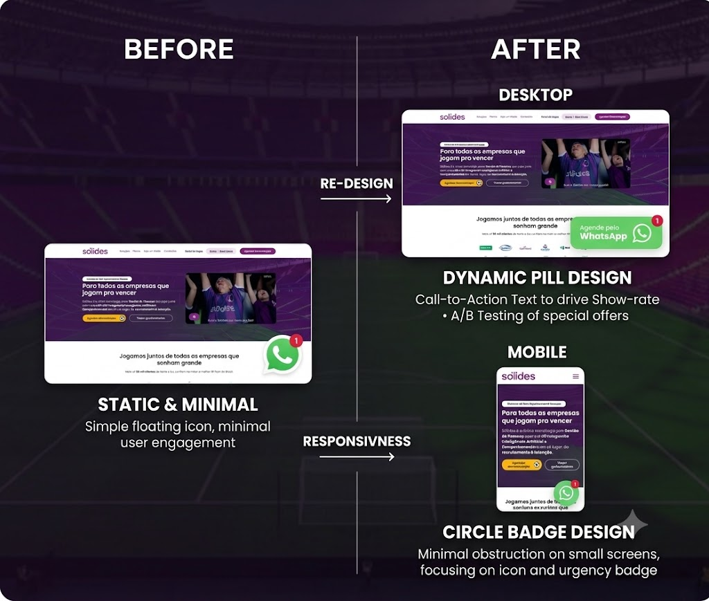
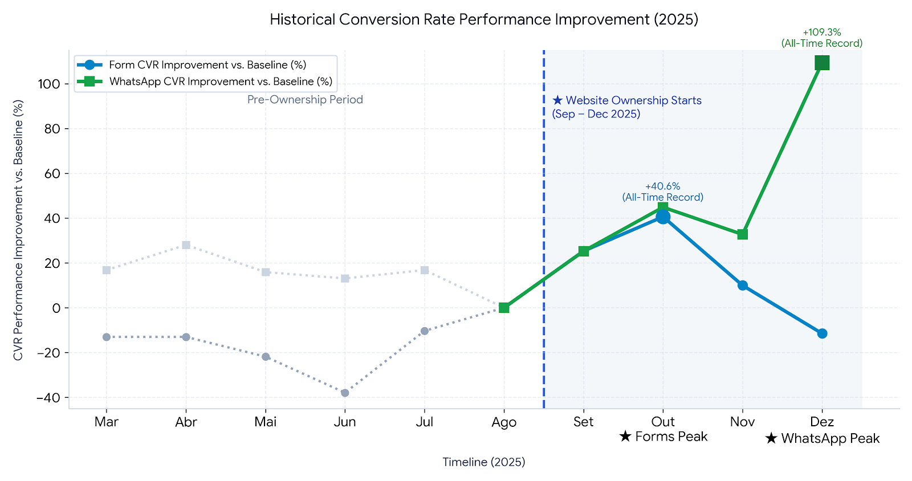
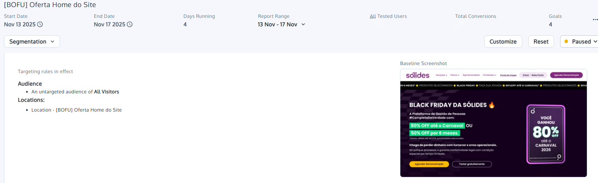
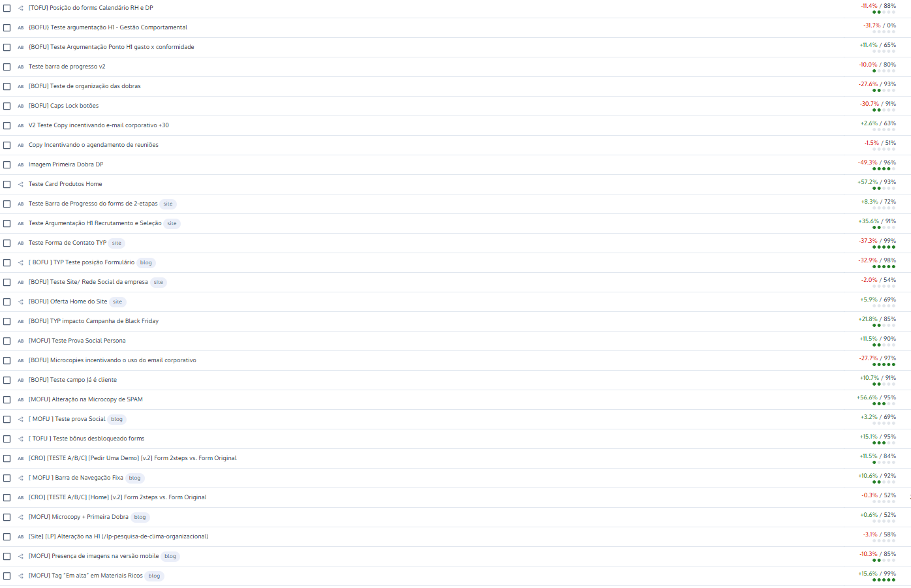
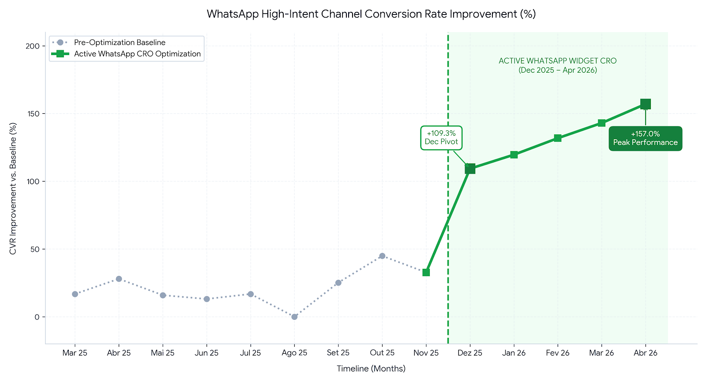

I'm Gabriela, a CRO & Growth professional with a background in Design. I connect behavior, data, and experimentation to help SaaS teams make better product decisions.
Real, Upwork-verified results at every stage — from first click to closed deal.
"Esquenta" Black Friday A/B tests and H1 copy testing lifted top-of-funnel form conversion, including a +35.6% uplift on Recruitment & Selection H1s.
A redesigned WhatsApp CTA widget — the primary source for qualified Show meetings — grew channel CVR by up to +157%.
Q4 WhatsApp trigger optimization reached a record +109.3% conversion uplift, directly driving Show-meeting volume through peak Black Friday traffic.
A high-traffic blog tagging strategy lifted conversion +15.6% at 99% confidence — one of dozens of tests run via Convert.
Every stage below ties back to one of the 4 featured case studies — click any card to open the full breakdown: role, approach and results.
Four real engagements, straight from my Upwork portfolio — with the actual dashboards and charts behind each result. Click a card to open the full write-up.

Digital Growth & UXPivoted to the WhatsApp CTA widget — the primary source for qualified Show meetings — after an all-time Form CVR record, reversing a seasonal Dec decline.

Website OwnershipFull website ownership directing CRO across forms and WhatsApp CTAs — sustained through Black Friday's peak traffic of 14.9k+ leads/mo.

CRO & Website StrategyLed end-to-end website execution for Black Friday, uniting Content, Design and Media across 10 key pages — including the "Esquenta" A/B tests.

A/B Testing & CRODozens of A/B and multivariate tests on Convert across blog, LPs and forms — copy, UI, microcopy and form-step (TOFU/MOFU/BOFU) experiments.
Six overlapping strengths I bring to Product, Growth and Experimentation teams.
Understanding why users behave the way they do, beyond what metrics alone reveal.
Turning data signals into testable hypotheses, then validating them through structured A/B tests.
Finding opportunities and measuring impact through quantitative analysis in GA4.
Turning test concepts into simple wireframes and sketches before handoff to design and engineering.
Improving business metrics through continuous, compounding experimentation.
Connecting business, product and design around shared, evidence-based goals.
An exploration loop, not a checklist. Click any step — or let it play.
Understand behavior through research.
A curious mind behind every experiment.
Jack of all trades, master of figuring things out.
I'm Gabriela, a designer turned CRO & Growth professional with a slightly obsessive curiosity about how people, products and ideas work.
I experiment with pretty much everything: products, data, languages, climbing, dance and travel.
That curiosity is also how I work — using design, behavioral insights and experimentation to turn assumptions into evidence and help digital products grow. My path: Design → Marketing → Growth → CRO.
Every test behind the numbers above — the 7 that anchor the 4 featured case studies, plus 4 more from the same testing program. Tap a row with a case tag to open the full write-up.
Notes I keep coming back to.
Real feedback from clients, colleagues and managers Gabi has actually worked with.
I had the pleasure of working with Gabriela on the Growth team, and she is one of the most outstanding professionals I've collaborated with. Her attention to detail is exceptional and directly translates into better results. She is proactive, organized, and brings creative ideas to every project. From a CRO perspective, she has a sharp analytical mindset and a genuine ability to connect data with user behavior, understanding how small funnel and landing page changes significantly impact conversion rates, always testing and optimizing. Her communication is clear, her attitude collaborative, and she makes every team better. I wholeheartedly recommend Gabi to anyone looking for a CRO specialist.
Gabriela is an excellent professional. During her time with us in AugeApp's internship program, she showed professionalism, commitment and exceptional skills for the marketing team's work. A creative person who always contributed great ideas and solutions to the challenges of creative and planning work. Her dedication to contributing, learning and working as part of a team stands out — I'm certain she'll add value to every project she's involved in.
Gabriela is an exceptional professional! Extremely quick at solving problems, understanding context, and coming up with great ideas. Nothing she does is random — every design decision is grounded in data and prior test results. Always willing to learn and share knowledge, great at teamwork, and she knows how to mediate discussions and help everyone reach common ground. Gabi is wonderful to work with — she lifts the whole team's energy and is constantly bringing new insights.
I've had the opportunity to work with Gabi on several projects during college, and I've always been impressed by her dedication and the quality of her work. She is very communicative, creative, and always finds thoughtful and effective ways to solve problems. She has a strong knowledge of her field, is reliable, and puts a lot of care into everything she does. Today I consider her a reference in her field — a talented, committed professional I would definitely recommend.
Gabriela worked with me for 2 years on the marketing team at AugeApp. Throughout that time she was always helpful and open to feedback in her creative process — in team planning meetings, her creative personality shone through, offering suggestions that added real value to our campaigns. On every occasion she was proactive in finding solutions, even without full command of the subject or tool. She's a deeply empathetic person and a pleasure to work alongside.
CRO & Growth Analyst — Hypothesis-Driven A/B Testing · GA4 Analytics · Wireframing & Rapid Prototyping
CRO Analyst with hands-on experience designing and running A/B tests end-to-end — from spotting a signal in the data, to forming a testable hypothesis, to launching and documenting the experiment. Comfortable working with GA4 and cross-functional teams of design, engineering and analytics. Background in Graphic Design means I can sketch and prototype test concepts myself before handing them off for implementation. Curious by nature, fluent in English, and always looking for the "why" behind user behavior.
Portuguese (native) · English (fluent) · Spanish (fluent)
Conversion Optimization Certification · UX Research Bootcamp · Intro to Artificial Intelligence · Digital Marketing · Content Marketing
After an all-time record Form CVR in October, I pivoted to the WhatsApp CTA widget — the primary source for qualified Show meetings — reversing the historical December decline.
After driving an all-time record Form CVR in October (+40.6%), I anticipated the historical December drop in form submissions and needed a way to protect Show-meeting volume through the seasonal decline.
Rather than keep squeezing an already-saturated form channel, I strategically pivoted to optimize the WhatsApp CTA widget — the primary marketing source for qualified Show meetings.
Business impact: protected the team's annual targets by unlocking a second high-intent channel exactly when the primary form channel was seasonally declining.

Led end-to-end website execution for Black Friday, uniting Content, Design and Media teams to deploy unified messaging and UI across 10 key pages.
Black Friday (Oct–Dec 2025) needed end-to-end website execution, uniting Content, Design and Media teams to deploy unified messaging and a cohesive UI across 10 key pages.
I owned the technical implementation myself — customizing code, headlines and offer cards for maximum conversion alignment — and designed the "Esquenta" ("warm-up") A/B tests that ran through October.
One of the real "Esquenta" tests — a Black Friday homepage offer, targeted at all visitors and run for a focused reporting window to validate the winning variant before wider rollout:
Business impact: maintained optimized form pathways through Black Friday and December campaigns, driving the high-volume lead capture that secured annual revenue targets.
Took full website ownership from September to December 2025, directing CRO across both forms and WhatsApp CTAs through Black Friday's peak traffic.
Took full website ownership from September to December 2025, directing CRO across both forms and WhatsApp CTAs — not a single channel or test, but the whole funnel.
Prepared high-converting funnels ahead of Black Friday, then deliberately shifted Q4 strategy toward direct sales in December once the seasonal form decline set in — sequencing which lever to pull each month.
Set an all-time domain record for Form Conversion Rate in October, sustained top CVR efficiency through Black Friday's peak traffic of 14.9k+ leads/month, then optimized WhatsApp triggers specifically in December.
Business impact: the record-breaking December WhatsApp uplift directly secured the company's annual target completion.
Planned, launched and analyzed multiple A/B and multivariate tests using Convert, across blog, landing pages and website forms — copy, UI, microcopy and form-step (TOFU/MOFU/BOFU) experiments.
The business needed a disciplined, ongoing testing program — not one-off experiments — spanning blog, landing pages and website forms across the full TOFU/MOFU/BOFU funnel.
Planned, launched and analyzed multiple A/B and multivariate tests using Convert, focused on copy, UI adjustments, microcopies and form steps — building a real, running test backlog rather than isolated experiments.
Dozens of concurrent and sequential tests, logged and tracked directly in the Convert platform:
Business impact: a fourth test — a high-traffic blog tagging strategy — added a further +15.6% uplift at 99% confidence, showing the program compounding across very different surfaces (product cards, forms, blog) rather than depending on any single win.